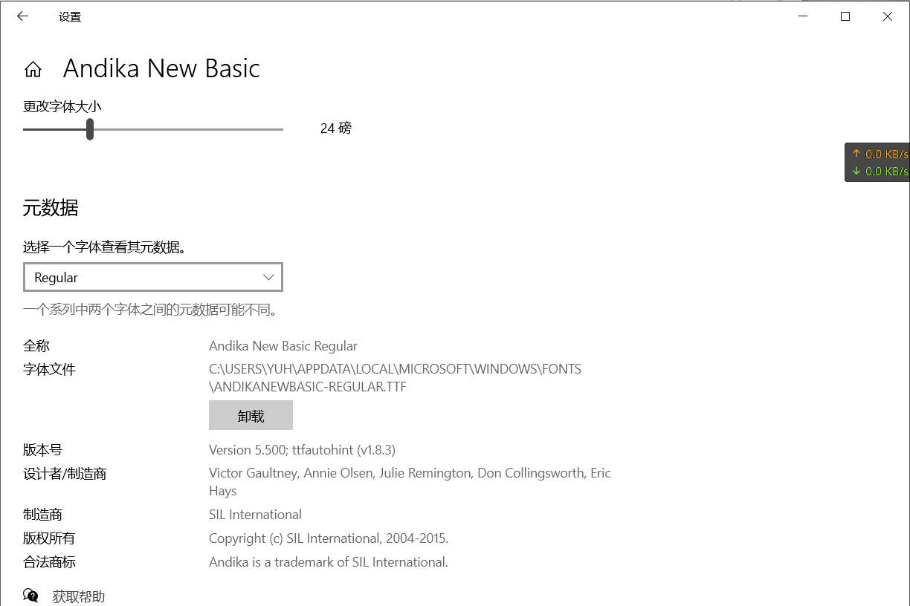

latex相关笔记
软件
不管你用的是 Tex Shop tex Studio tex Maker还是 vscode，这些都只是 IDE，我们需要注意的是，除了IDE，你安装的是什么？
以下所有内容，仅以 texlive 为例，使用 CTex MikTex等的同学，请自行安装 texlive，下载安装：
安装方法，百度上一堆
你在终端中输入
latex以后显示类似如下，说明安装成功，否则自己百度修改环境变量，或重启电脑试试
1 | # 注意其中的关键 TeX Live 2022 |
IDE
不强求，自己舒服就好，但是 vscode 配合 James-Yu.latex-workshop 这个插件真的是太好用了
对于vscode，建议在设置（json）中自定义
打开自定义快捷键
ctrl shift P，mac大概是command shift P，输入settings json，选择打开设置
如果出现红色，说明你放的位置不对，这个应该放在最外层的 {} 中间，并且被添加的这部分上面有一个 , 或 {，下面有一个 }
1 | "latex-workshop.latex.tools": [ |
加粗
如果不是模板，自己用，更建议自定义加粗字体，其中"方正粗楷简体"几个自是自定义的加粗字体，可以看下面字体安装方法
1 | \documentclass[UTF8]{ctexart} |
问题一
常见的其实是中文加粗，在 mac linux经常不起作用，而在 windows 里加粗了，但是字体变了
原因是，latex现在基本上取消了中文字体加粗，所以请开启 伪加粗
即一般第一行为
1 | \documentclass{article} |
需要加上 伪加粗 选项，即
1 | \documentclass[AutoFakeBold]{article} |
有些已经有选项了，补充到后面即可
1 | \documentclass[aps,prb,twocolumn,superscriptaddress,showpacs]{revtex4-1} |
问题二
开启 伪加粗以后，一般情况下，再使用 \textbf{} 基本上就没问题了，但是有些时候，英文还是不起作用。
这个有可能是因为，你用的模板，或者默认模板里的英文字体，在你的电脑上安装的不合适，一般情况下一个字体，要包含四个格式，请看这里：Google Fonts，这个字体包含四个文件，分别问 Regular Regular Italic Bold Bold Italic，也可看到，完整的字体应该包含，常规字体、加粗字体、斜体、加粗斜体。
所以解决方法有两种，
- 一个是，想办法把字体安装完整，
- 另一种方法是修改为当前电脑上已经有的字体，latex字体修改 后面讲，windows、linux、mac是不太一样的
字体修改与自定义
中文字体
现在的latex已经支持中文了，请不要再使用
CTex等，直接用texlive，以下默认你使用的是texlive
latex一般是论文和ppt
- 毕业论文中默认模板，一般用
ctexbook，而book是不支持中文的 - 常规论文一般期刊提供相应的模板，或者
ctexart - 答辩PPT，一般用
ctexbeamer，而beamer是不支持中文的
全局中文字体设置
1 | \setCJKmainfont{你的字体名} |
全局英文字体
1 | \setmainfont{你的字体名} |
全局代码字体
1 | \setmonofont{你的字体名} |
这里的 你的字体名 不同电脑是不一样的
mac 找到
字体册这个软件，点开准备用的字体，有一项是PostScript（大概是这么拼写的，懒得去查看了），这个名字就是windows，设置中搜索，字体，打开，搜索准备用的字体，然后点开，里面也有个英文名（第一个
全称），复制那个不要包含字形，比如
regular、blod等，下图中只要Andika New Basic 注意安装字体时，右键，为所有用户安装，不要直接双击安装！！！仅为当前用户安装是无法识别的
linux
输出的每一行是一个字体，前半段是文件位置，1
2
3
4# 查看中文字体
fc-list :lang=zh
# 查看所有字体
fc-list:后面（到:或者,为止）就是需要的这个名字比如
字体名字应该是1
/home/yuh/.fonts/win/times.ttf: Times New Roman:style=Regular,Normal,obyčejné,Standard,Κανονικά,Normaali,Normál,Normale,Standaard,Normalny,Обычный,Normálne,Navadno,thường,Arrunta
1
Times New Roman
常用代码
这个网站挺好，在线LaTeX公式编辑器-编辑器
分栏
columns
有时候左图，右文字，宽度不要写死，建议用文本宽度的多少倍代替 0.6\textwidth
1 |
|
公式
简单公式
\[ \begin{equation} f = m \times a \end{equation} \]
带序号
1
2
3
4% 带序号
\begin{equation}
f = m \times a
\end{equation}不要序号
1
2
3\begin{equation*}
f = m \times a
\end{equation*}也可以换成
1
2
$$ f = m \times a $$行内公式
1
$f = m \times a$
多行公式
这里都用 aligned 实现，
\\换行，&每行对齐的地方
简单
\[ \begin{aligned} &a=1\\ &bscw=2 \end{aligned} \qquad c=3 \]
注意对于 aligned 前后不要空行，会莫名其妙错误， & 为了左对齐
1 | \begin{equation} |
推导
\[ \begin{aligned} a&=c+b+x\\ &=2+1+2\\ &=5 \end{aligned} \]
1 | \begin{equation} |
大括号
\[ \left\{ \begin{aligned} &x=\dfrac{3\pi}{2}(1+2t)\cos(\dfrac{3\pi}{2}(1+2t)), & \\ & & 0\leq s\leq L,|t|\leq1.\\ &z=\dfrac{3\pi}{2}(1+2t)\sin(\dfrac{3\pi}{2}(1+2t)), & \end{aligned} \right. \]
1 | \begin{equation} |
图片
先在最开始引用相关的包
1 | \usepackage{graphicx} |
常规
1 | \begin{figure}[H] |
说明
label图片的引用标识，必须唯一！，可以在引用处点击跳转，使用方法如下1
如图\ref{test111}
angle可以设置图片旋转角度width=0.3\textwidth，按照当前行的比例，设置图片宽度- 图片可以只有文件名。路径在上面统一设置
\graphicspath{{figures/}{figure/}{pictures/}{picture/}{pic/}{pics/}{image/}{images/}} H注意 H 表示固定图片在文中的位置
子图可
label引用，可分别caption、label
这是一个 \(2\times 2\) 的图

1 | \documentclass{ctexart} |
表格

1 | \documentclass{article} |

1 | \documentclass{article} |
其他
图文间隔
有时候图片、公式等等会因为各种原因，导致前后与正文间隔较小，看着很不爽
减小纵向间距，正数可以增加间距
1
\vspace{-1cm}
1
\hspace{-1cm}
LaTex的PPT下方显示参考文献
因为答辩或者组会，老师可能问你这个文献年份、作者
所以可以这么用
最开头添加依赖和
bib参考文献正文1
2
3\RequirePackage[backend=bibtex, isbn=false, url=false]{biblatex}
\setbeamerfont{footnote}{size=\tiny}
\addbibresource{database.bib}效果如图1
2
3
4
5
6
7
8
9
10
11
12
13
14\begin{frame}{现有研究}
答辩中参考文献放在每页下面，方便应对提问：比如年限、作者、期刊等
\begin{figure}
\subfigure[2nm、10-160\%\footfullcite{Zhang2011}]{
\includegraphics[width=0.28\textwidth]{lammps.png}
}
\subfigure[5nm、50-350\%\footfullcite{Zhang2011}]{
\includegraphics[width=0.36\textwidth]{lammps.png}
}\\
\subfigure[20nm、25-45\%\footfullcite{Zhang2011}]{
\includegraphics[width=0.4\textwidth]{lammps.png}
}
\end{figure}
\end{frame}
前后文档对比
命令为 latexdiff
1 | latexdiff old.tex new.tex > diff.tex |
注意新旧文件顺序，如果差别文件比较长，中文下划线不会自动换行 可以在 diff.tex 文件中添加 xeCJKfntef 即可
1 | \documentclass{......} |
模板示例
本文作者：yuhldr
本文地址： https://yuhldr.github.io/posts/2dcfe2a6.html
版权声明：转载请注明出处！